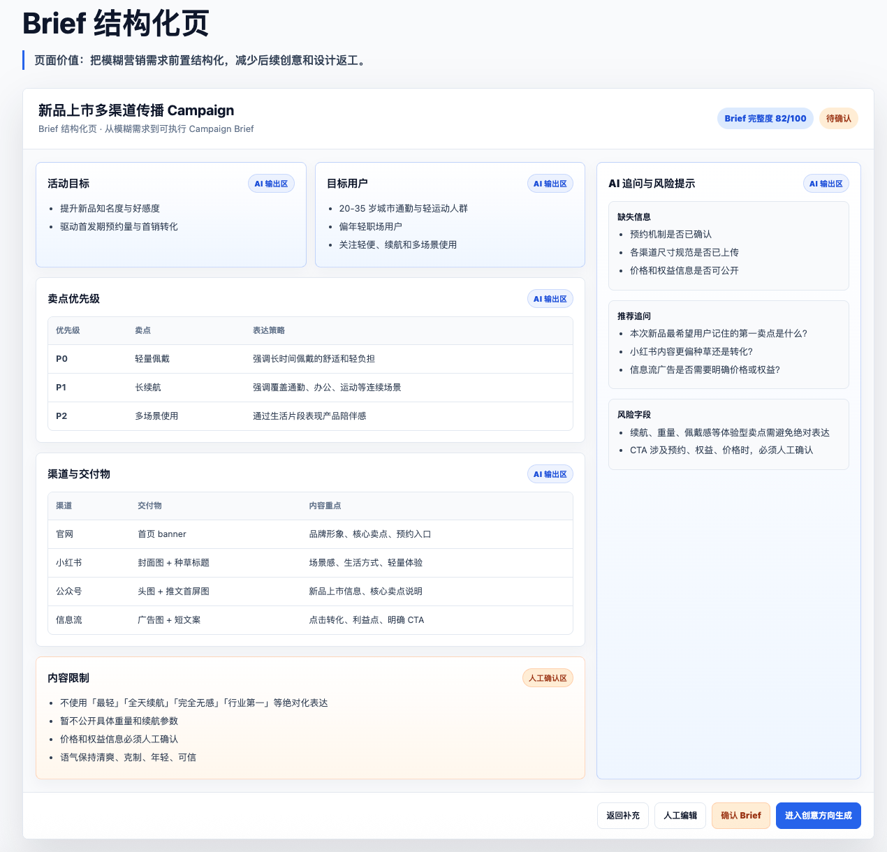
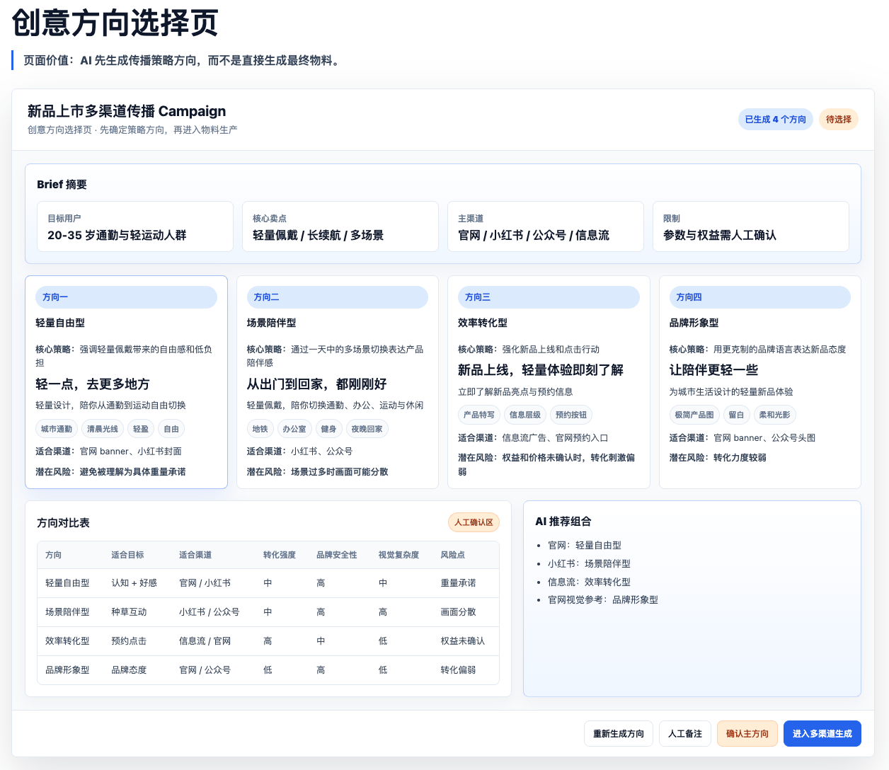
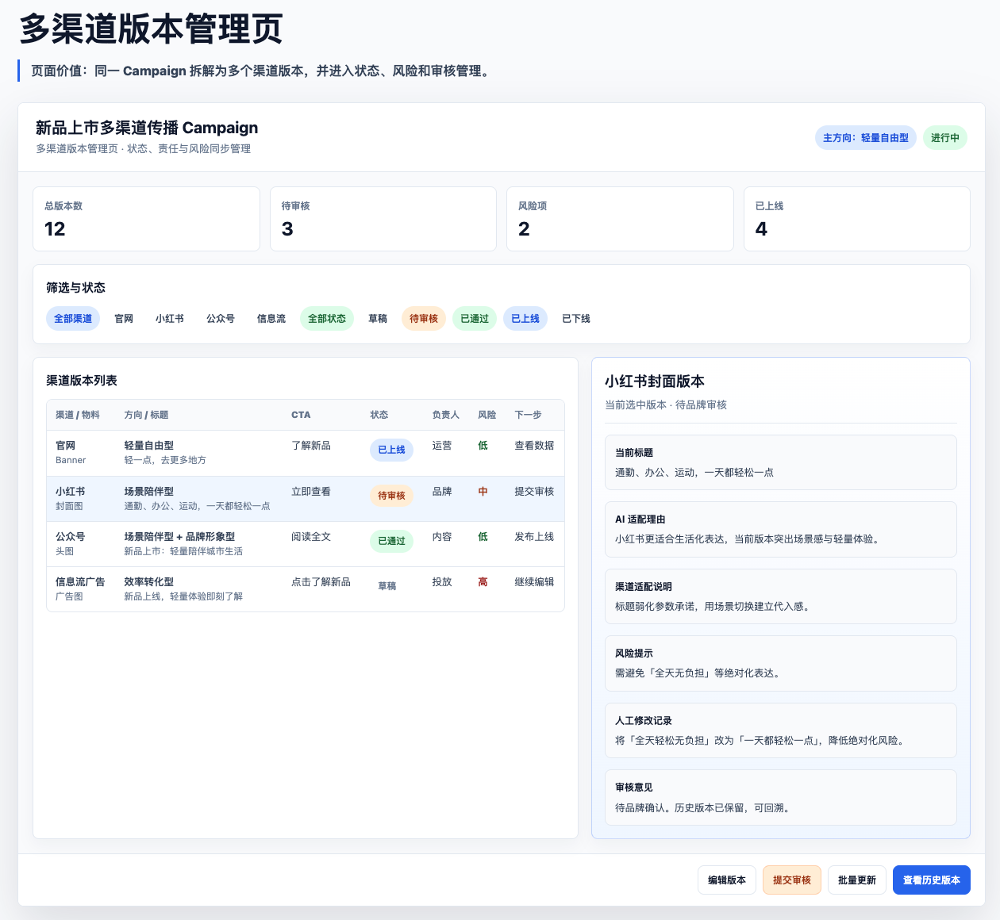
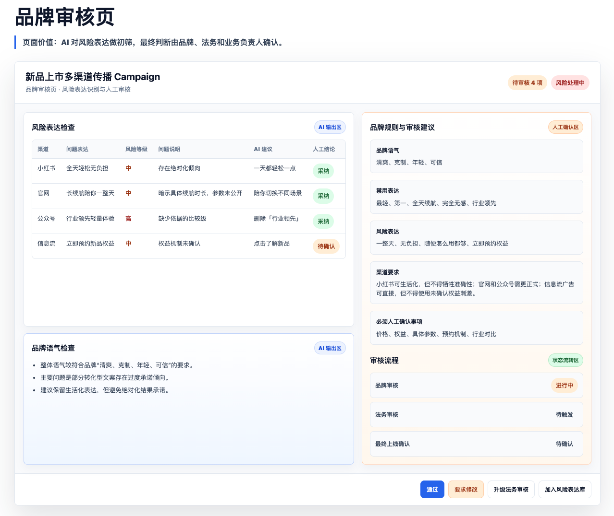
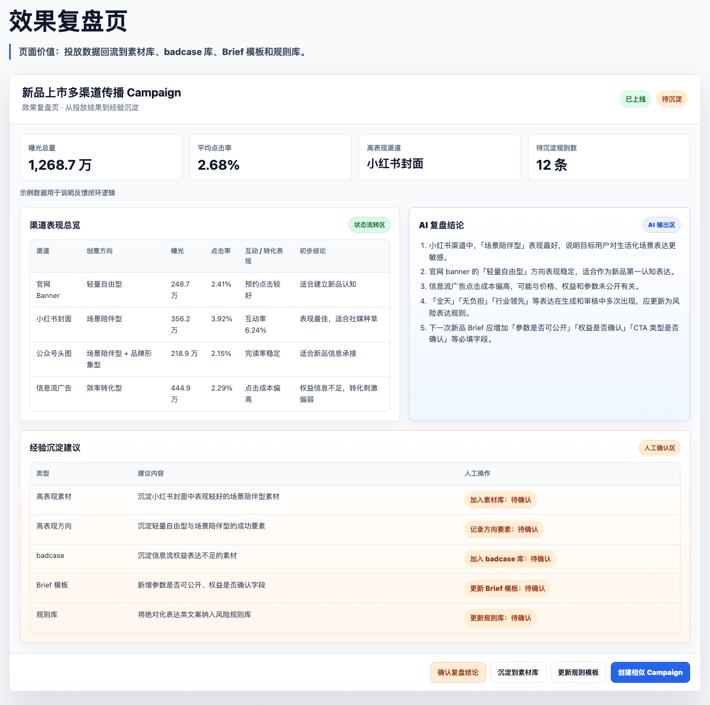

一句话需求难执行
缺少目标用户、卖点优先级、渠道目标、内容限制和审核要求。
模块 3 · 作品集案例
企业营销内容生产场景的 AI 工作流产品
从活动 Brief 到多渠道物料生成、审核与效果回流。面向企业营销活动内容生产场景，设计一个将 AI 嵌入 Brief 结构化、创意方向生成、多渠道版本管理、品牌审核与投放反馈复盘的工作流产品。
内容型 AI 应用的关键不是单次生成效果，而是需求 brief 是否结构化、渠道版本是否可复用、品牌与风险检查是否前置、badcase 是否能进入下一轮规则更新。
01 · 业务痛点
真正拖慢企业营销内容生产的，不只是“设计出图”，而是 Brief、方向、渠道版本和复盘资产之间没有形成稳定链路。
缺少目标用户、卖点优先级、渠道目标、内容限制和审核要求。
团队经常看到成稿后才发现方向不对，造成设计和沟通返工。
官网、小红书、公众号、信息流广告要求不同，版本状态难统一。
审核意见停留在单次修改中，投放数据没有回流到模板和规则库。
02 · AI Workflow
AI 不是替代整个内容生产流程，而是在关键节点降低信息整理、方向发散、重复适配和规则检查成本，同时保留人工判断。
从一句话需求到多渠道内容，不是生成链路越长越好，而是每一步都要沉淀为可复用的输入、审核标准和版本资产。
从一次性内容生产到可持续优化机制
03 · Product Evolution
解决问题：需求不清、方向不明。
AI 作用：识别缺失信息，生成结构化 Brief 和多个传播方向。
人工作用：确认目标用户、卖点优先级、限制条件和主方向。
产品价值：降低前期沟通成本，减少方向返工。
解决问题：多渠道适配重复、版本状态混乱。
AI 作用：根据渠道生成不同标题、CTA、视觉说明和风险提示。
人工作用：编辑版本、确认内容、提交审核、管理状态。
产品价值：提升多渠道内容生产协同效率。
解决问题：品牌不可控、经验不可沉淀。
AI 作用：识别风险表达，总结投放结果，提出规则更新建议。
人工作用：品牌 / 法务审核，确认经验是否进入规则库、素材库和 Brief 模板。
产品价值：形成可控、可复用、可优化的内容生产机制。
04 · 页面原型
五张原型截图用于说明产品机制。页面中的示例数据用于说明产品机制，不代表真实商业投放结果。





05 · 产品决策
如果输入不清晰，AI 生成速度越快，后续返工也可能越快。
将“创意方向”作为中间态，让运营、设计和品牌在投入生产前完成判断。
每个渠道版本都需要保留状态、风险等级、修改记录和人工确认记录。
投放结果应更新素材库、badcase 库、Brief 模板和规则库，成为下一次 Campaign 的输入。
06 · 反馈闭环与价值
每一次活动不再是一次性内容生产，而是持续优化企业内容生产机制。AI 的价值从“生成一张图”升级为“帮助组织沉淀可复用的内容生产能力”。
组织资产沉淀
提升 Brief 质量，降低沟通和返工成本，提高多渠道内容生产效率，提升品牌一致性，并将投放效果反哺下一次内容生产。
将分散经验转化为可复用资产，将品牌规范从静态文档转化为可调用规则，将审核意见转化为规则更新。
从业务流程而非工具功能出发定义产品，明确 AI 接入节点和人机协同边界，把一次性生成升级为可追踪、可复用、可优化的工作流。